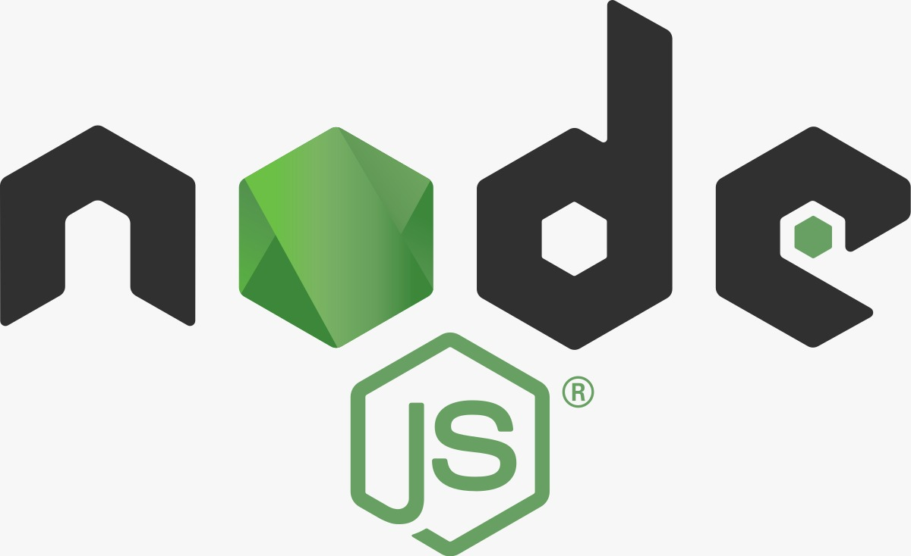
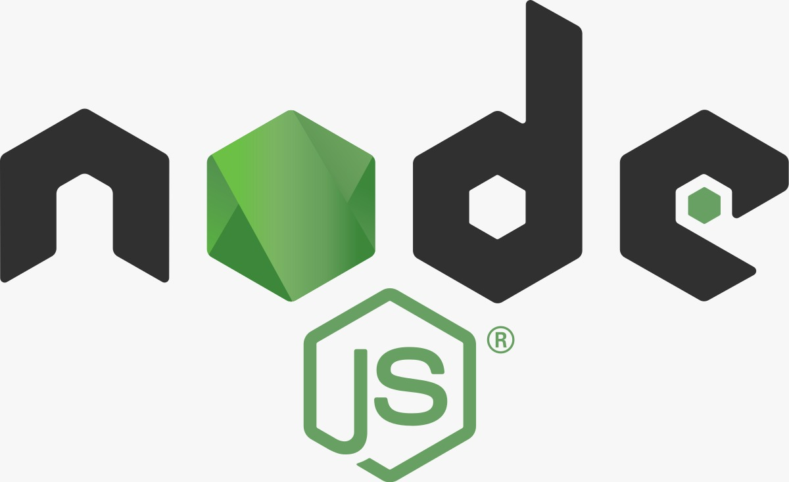
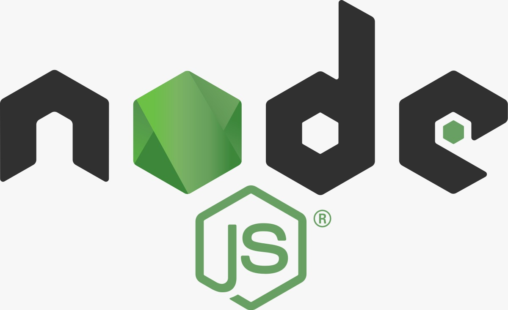

Actualmente, los perfiles profesionales orientados a la parte web se dividen en tres: Front-End, Back-End y Full Stack. En esta página nos enfocaremos en el último. Un desarrollador Full Stack es aquella persona que domina las tecnologías que permiten manejar la parte visual (Front-End) y la parte que no se ve (Back-End), en una Aplicación Web. Ahora, ustedes se preguntarán: ¿Qué tecnologías debo conocer para ser un Full Stack? A continuación, mencionaremos las más conocidas:

Si deseamos convertir un sitio web estático en dinámico, condimento perfecto es el lenguaje de programación JavaScript. Efectos especiales, contenidos dinámicos y elementos que tengan movimiento, respuesta a acciones del usuario, hacer una calculadora, un juego, son algunos de las cosas que podemos hacer con JS.
Programar orientado a Web es un mundo muy interesante y amplio. Así como existe Java y PHP, también existe ASP.NET, framework o entorno de desarrollo incluido en la plataforma. NET de Microsoft, el cual nos permitirá desarrollar completas Aplicaciones web, teniendo en cuenta un ingrediente principal: los Web Forms.
Si estás leyendo esta página, debes haber escuchado de JavaScript (JS), lenguaje de programación orientado a la parte Front-End. La tecnología cambia y evoluciona. Esto ocasiono que JavaScript no sólo sea Front, sino que, gracias a node.js, ahora JS pertenece al lado servidor: ) (Back-End)
Sé que después de haber leído lo anterior, te ha entrado el bichito de la curiosidad:) Para ello, a continuación, te adjunto los siguientes enlaces:
HTML5